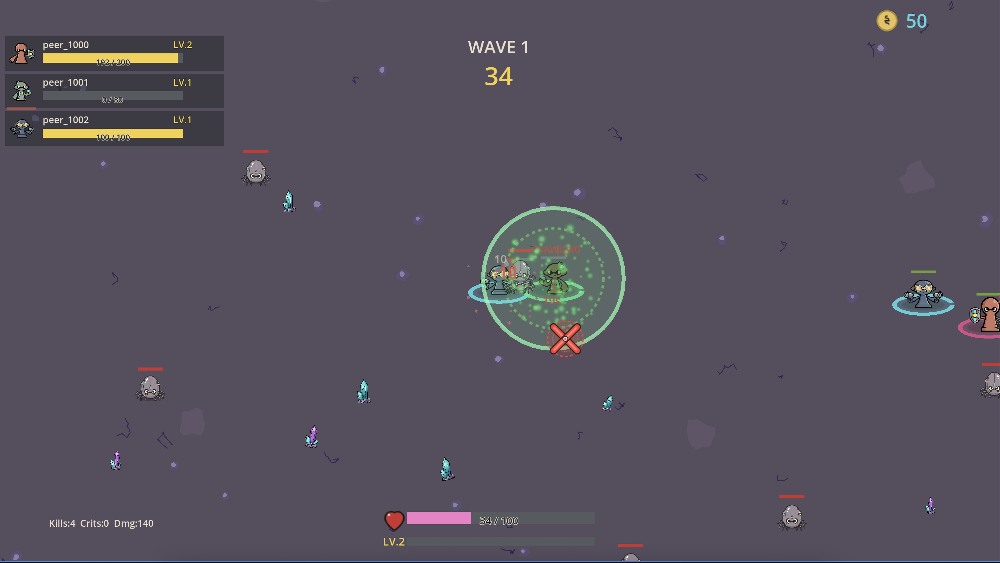
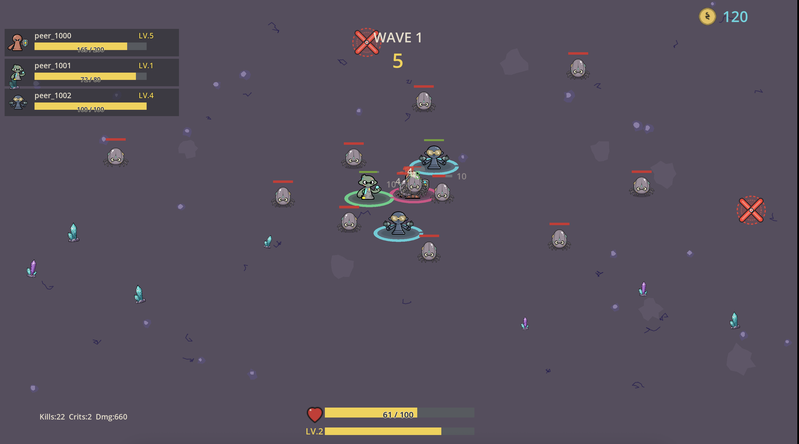
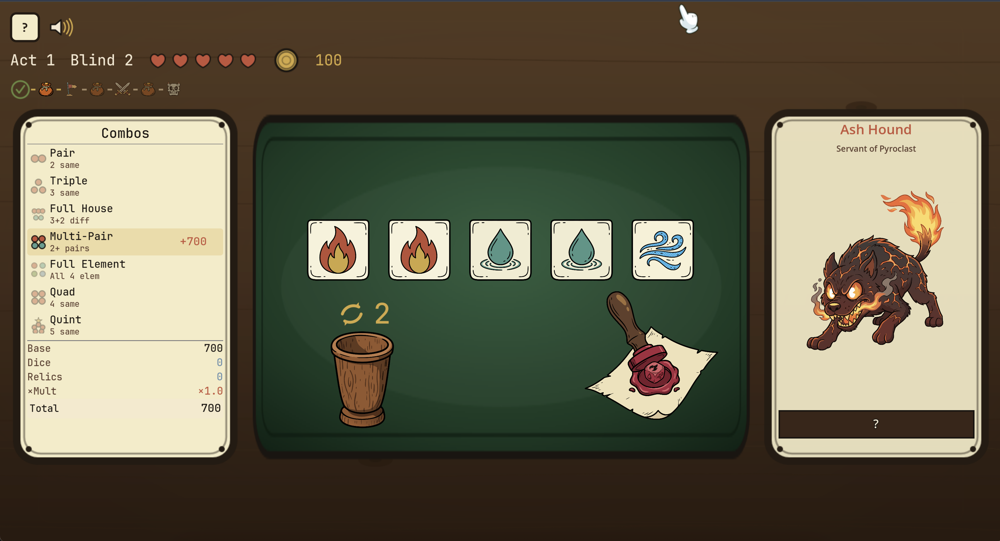
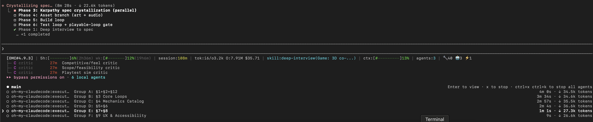
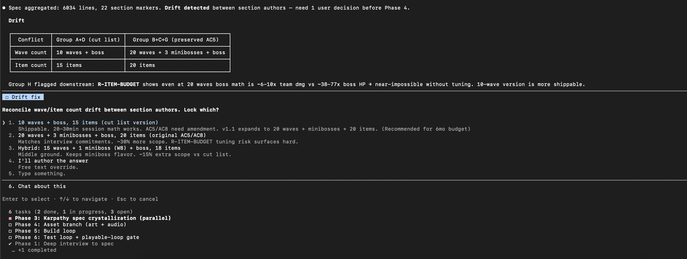

capcarde.itch.io // build journal
game-forge.
How I automate my games
// idea → spec → assets → overnight build → playable
game · co-op wave shooter
Multiplayer waves, peers leveling live.
3 peers · per-player HP · per-player XP · kill / crit / dmg HUD · spec mechanics intact, end to end.


game · dice roguelike
Relics, Forge, Items — full economy.
Act/Blind progression · 6 relics priced & described · Sell slot · Next-Blind target · NPC patter. UI hand-illustrated, all generated.

play screen · combos
Multi-Pair lands +700.
- 7 combo tiers — Pair → Quint
- Element dice — fire / water / wind
- Boss card · Ash Hound · Servant of Pyroclast
- Score breakdown: Base · Dice · Relics · ×Mult
the spec's Mechanics Catalog → playable in browser.
alien-waves · generated asset set
Every sprite, every UI piece — Claude-native SVG.
Generated via game-asset-forge · 10–20 parallel sub-agents · each ran its own visual critique loop until ≥90% match to style guide. · per-asset prompt: N/A (not captured at gen-time — workspace only stored renders, not invocations)
Game projects die at fuzzy design and fuzzy testing.— game-forge SKILL.md, line 12
8 phases, never skipped
The pipeline
flowchart LR
P0["0 · Ideation"] --> P1["1 · Interview"] --> P2["2 · Critique"] --> P3["3 · Spec"]
P3 --> P4["4 · Assets"] --> P5["5 · Build"]
P5 --> P6["6 · Test"] --> P65{"6.5 · Playable
Gate"}
P65 -- pass --> P7["7 · Change
Protocol"]
P65 -- fail --> P5
classDef gate fill:#ff79c622,stroke:#ff79c6,stroke-width:2px
classDef build fill:#50fa7b22,stroke:#50fa7b,stroke-width:2px
classDef spec fill:#8be9fd22,stroke:#8be9fd,stroke-width:2px
class P0,P2,P65 gate
class P1,P3 spec
class P4,P5,P6,P7 build
Phase 1 — Deep Interview · worked example
What the interview asked for alien-waves.
6 dimensions × ~5 questions each. Below: one representative probe per dimension. Each answer feeds the LLM judge that scores ai on the next slide.
"What happens in the first 5 seconds after a peer joins a wave?"
probes: spawn, aggro, first kill, XP feedback
"When a kill lands, what makes it satisfying — sound, screen-shake, freeze-frame? Name a reference game."
probes: input-to-feedback latency, juice
"3 peers fixed, or 2–8? Solo with bots? Cut list before I write a line."
probes: MVP vs stretch, explicit cuts
"Why open alien-waves at midnight instead of Vampire Survivors?"
probes: differentiator in one sentence
"Engine? Multiplayer wire — WebRTC P2P or server-authoritative?"
probes: stack, export target, deps
"After one playtest, what single observation proves the game works — or kills it?"
probes: pass/fail criterion · measurable
Phase 1 — Deep Interview · ambiguity gate
When is the spec clear enough?
The interview exits only when remaining ambiguity drops below A* = 0.15. A score in [0, 1] derived from 6 dimensions of clarity — each scored by an LLM judge against the current spec, weighted, summed.
exit when A(spec) ≤ A* · max rounds = 30
| Core Loop | 0.25 |
| Feel | 0.15 |
| Scope | 0.15 |
| Goal | 0.15 |
| Constraints | 0.15 |
| Success | 0.15 |
| Σ | 1.00 |
Phase 2 — Critique
3 critics in parallel.
Adversarial review before spec crystallization. Non-negotiable. If any critic flags a fundamental break, loop back to Phase 1 — don't patch.
live capture · P2 → P3
3 critics + 8 spec writers — in flight.

Top: 3 critic agents (Playtest / Scope / Feel · 27m each). Bottom: 8 executor agents writing Groups A–F in parallel. One main thread orchestrating. Token spend, wall-clock, context all tracked live.
Phase 3 — write the full plan
Three rules for a spec Claude can actually build from.
Named after Andrej Karpathy's pattern: don't summarize, don't hand-wave, don't aspire. Spell it out so an AI can execute mechanically.
- Write everything down. Every decision in the doc — even the ones you rejected, and why.
- Use numbers, not vibes. "Fast" isn't a spec. "Player runs at 4 tiles / sec" is.
- Every feature has a way to prove it works. If you can't test it, you can't ship it.
- ~7000 lines · 14 sections · written by 8 AI agents in parallel
where the 3 rules show up
Each rule plugs into a different part of the flow.
live capture · P3 assembly
Drift caught between section authors.

6034 lines aggregated. 22 section markers conflict on wave count + item count. Group H flags downstream math (R-ITEM-BUDGET) makes 20-wave version near-impossible. Skill blocks Phase 4 until the user picks one — no silent reconciliation, no drift in shipped spec.
Phase 5 — Build Loop
One decision. Default = overnight.
overnight/{slug} branch.the watchdog contract
overnight.config.json
{
// what to build
"project_slug": "alien-waves",
"spec_path": "specs/alien-waves-spec.md",
// budget caps — watchdog self-disarms on hit
"max_hours": 12,
"max_iterations": 240,
"max_cost_usd": 50,
// loop cadence
"tick_minutes": 10,
"stuck_threshold": 3,
// notify + branch
"notify_on": ["blocker", "done", "cap_hit"],
"autocommit": true,
"checkpoint_branch": "overnight/alien-waves"
}how each task gets finished
Every task passes 4 checks. No shortcuts.
The spec lists every task to build — picked one at a time. Skip a check and the task loops back. Marked done only when all four pass.
FAILURE MODE
Shipped the parts.
Not the machine.
- Every unit test green
- Modules registered
main.tsrenders "hello world"- First screen never wired
GATE 6.5
Playwright proves
the screen.
npm run dev+ headless browse- First UX-flow screen renders for real
- Happy path is reachable
- Else:
NEEDS_INTEGRATION.md+ loop
every agent · every gate · every artifact
Full end-to-end
flowchart TB
USER([user idea / blank]) --> P0
subgraph S0["P0 · Ideation Gate"]
P0{has concept?}
P0 -- no --> RES["external-context
itch.io · trends · gaps"]
RES --> PITCH["3–5 pitches
w/ delta"]
PITCH --> P0
P0 -- yes --> DELTA[/"one-sentence
competitive delta"/]
end
DELTA --> S1
subgraph S1["P1 · Design Interview"]
DI["deep-interview
ambiguity ≤ 0.15
≤ 30 rounds"]
DI --> SPEC1["spec/deep-interview-{slug}.md"]
end
SPEC1 --> S2
subgraph S2["P2 · Critique (parallel)"]
direction LR
C1["critic #1
playtest sim"]
C2["critic #2
scope · feasibility"]
C3["critic #3
feel · competitive"]
end
C1 --> TRIAGE
C2 --> TRIAGE
C3 --> TRIAGE
TRIAGE{"address /
accept /
defer"}
TRIAGE -- fundamental break --> DI
TRIAGE -- ok --> S3
subgraph S3["P3 · Spec (parallel writers)"]
direction LR
GA["Elevator + Context + Cuts"]
GB["Core Loops"]
GC["Mechanics Catalog"]
GD["Progression + Feel"]
GE["Tech + Assets"]
GF["UX & Accessibility"]
GG["Tests + Build Stories"]
GH["Risks + Critique Log"]
end
GA & GB & GC & GD & GE & GF & GG & GH --> ASM["assemble-spec.sh"]
ASM --> SPEC2[("game-{slug}-spec.md
14 sections")]
SPEC2 --> S4
subgraph S4["P4 · Assets"]
direction LR
ART["game-asset-forge
+ critique loop"]
AUD["audio-forge
5 routes → manifest.json"]
end
S4 --> MODE{build mode?}
MODE -- default --> OVN["overnight-watchdog.sh arm
caps: hours · iters · $"]
MODE -- manual --> APIL["autopilot / ralph
--critic=critic"]
OVN --> LOOP
APIL --> LOOP
subgraph LOOP["P5+6 · per story"]
direction LR
BUILD["executor
implements one build story"] --> TEST["game-test
Playwright / recipe"]
TEST --> GATE65{"P6.5
playable
gate"}
end
GATE65 -- fail --> NEEDS["NEEDS_INTEGRATION.md
+ UI-INT-001"]
NEEDS --> BUILD
GATE65 -- pass --> NEXT{more stories?}
NEXT -- yes --> BUILD
NEXT -- no --> DONE([game shipped
capcarde.itch.io])
DONE -.change.-> P7["P7 · update
Mechanics + Stories + test"]
P7 -.-> BUILD
classDef gate fill:#ff79c622,stroke:#ff79c6,stroke-width:2px
classDef build fill:#50fa7b22,stroke:#50fa7b,stroke-width:2px
classDef spec fill:#8be9fd22,stroke:#8be9fd,stroke-width:2px
classDef artifact fill:#f1fa8c22,stroke:#f1fa8c,stroke-width:2px
classDef terminal fill:#ffb86c22,stroke:#ffb86c,stroke-width:2px
class P0,TRIAGE,GATE65,MODE,NEXT gate
class DI,GA,GB,GC,GD,GE,GF,GG,GH,ASM spec
class C1,C2,C3,ART,AUD,OVN,APIL,BUILD,TEST,P7 build
class SPEC1,SPEC2,DELTA,PITCH,NEEDS artifact
class USER,DONE terminal
The spec is the source of truth.— game-forge, phase 7
Drift kills the project.